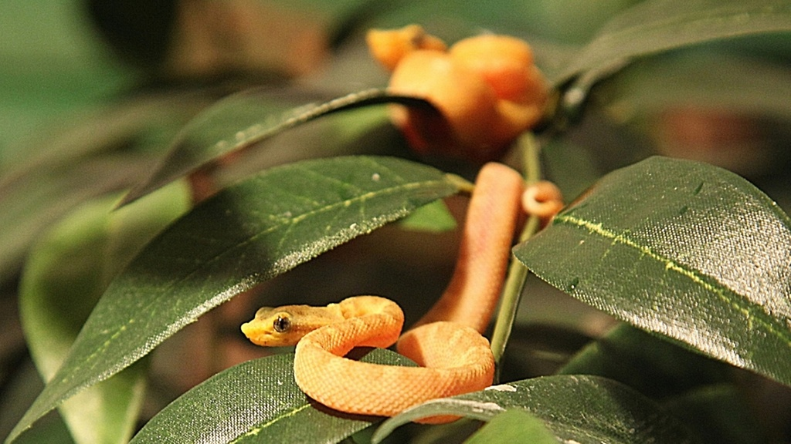
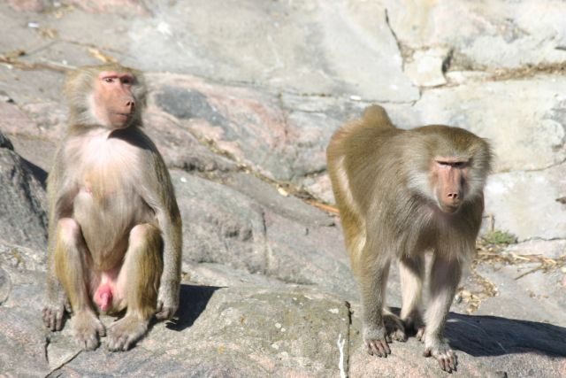
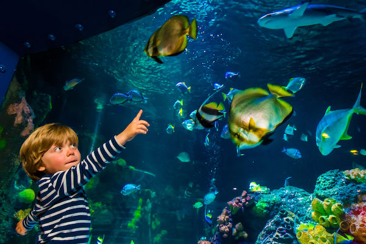
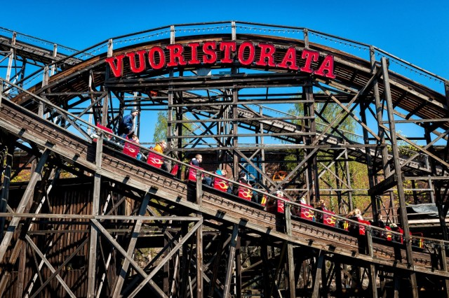

Lapsille
Helsingistä löytyy menoa ja meininkia moneeen makuun - myös pieneen. Tarkasta tästä kaupungin parhaat menovinkit pikkuväen mieleen!
Tropicario
"Koe seikkailu käärmeiden ja liskojen maailmassa. Näe maailman myrkyllisimpiä käärmeitä, katso monimetristä kuristajaa silmästä silmään. Tropicariossa on enemmän jättiläiskäärmeitä kuin missään muualla Pohjoismaissa."
Katso täältä lisää!Korkeasaari
"Korkeasaaren eläintarha perustettiin vuonna 1889 opiksi ja valistukseksi, jotta kansanpuistossa olisi ylentävää ajanvietettä. Nykyään Korkeasaaressa voit tutustua noin 150 eläinlajiin tundralta trooppisiin sademetsiin ja aavikoihin."
Katso täältä lisää!Sea Life
Sukella veden alaiseen seikkailuun ja tule tutustumaan Sea Lifen monipuoliseen eläinvalikoimaan. Saapumalla oikeaan aikaan pääset seuraamaan niiden ruokintaa!
Katso täältä lisää!Linnanmäki
"Linnanmäki on Suomen vanhin ja suosituin huvipuisto, joka sijaitsee Helsingin Alppilassa. Linnanmäellä on yli 40 huvipuistolaitetta, runsaasti erilaisia pelejä sekä ravintoloita ja kahviloita. Huvipuiston suosituin laite on puinen vuoristorata, joka on ilahduttanut huvittelijoita jo vuodesta 1951 alkaen."
Katso täältä lisää!